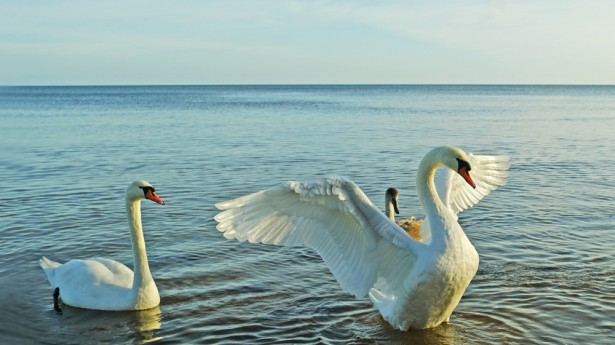

Tuesday, May the 1st, 2012
back to: title, date or indexes
With my ornithologist's hat on, I keep telling you that swans are savage, murderous, semi-aquatic monsters. Now, with thanks to reader Dan Fuchs, unassailable evidence that I have been right all along…
A man whose job was to maintain and care for the swans at a suburban condominium complex in Des Plaines, Illinois was killed yesterday in what appears to have been a freak attack by one or more of the birds.
Nothing freakish about it, when, like me, you know what you're dealing with… feathered fiends!
